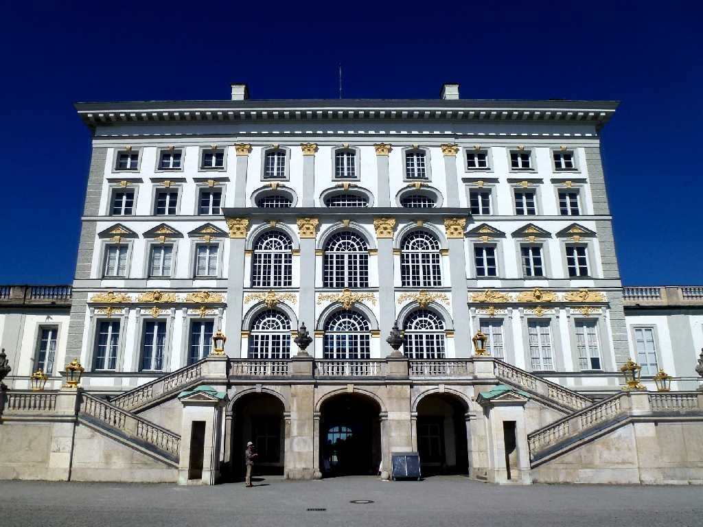
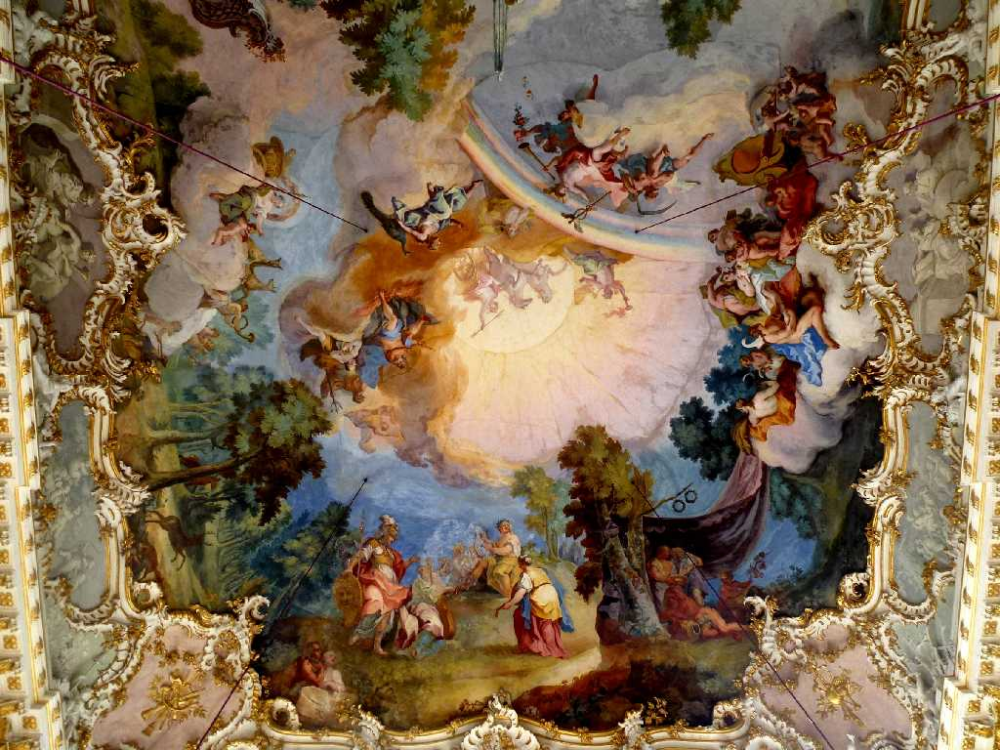
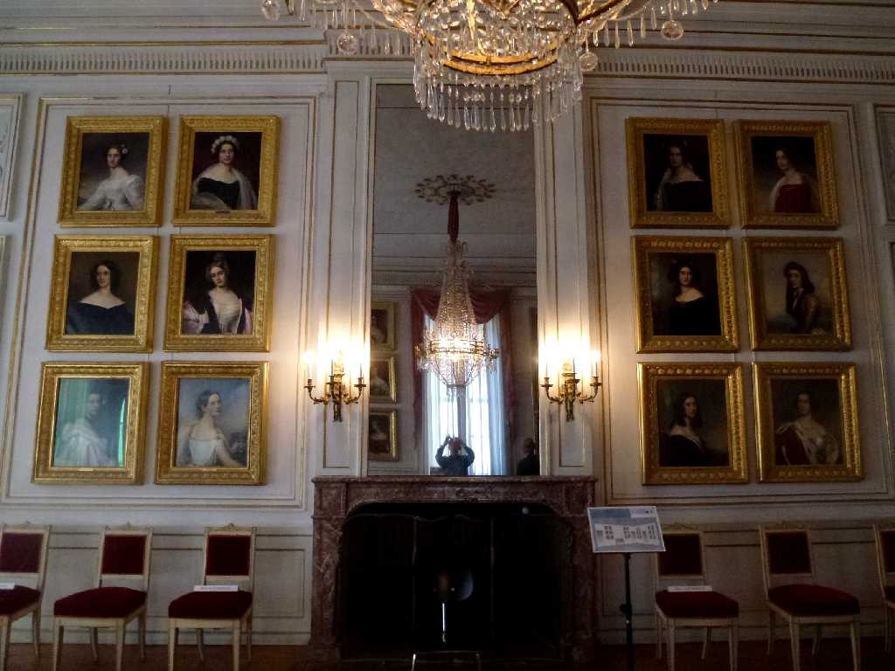
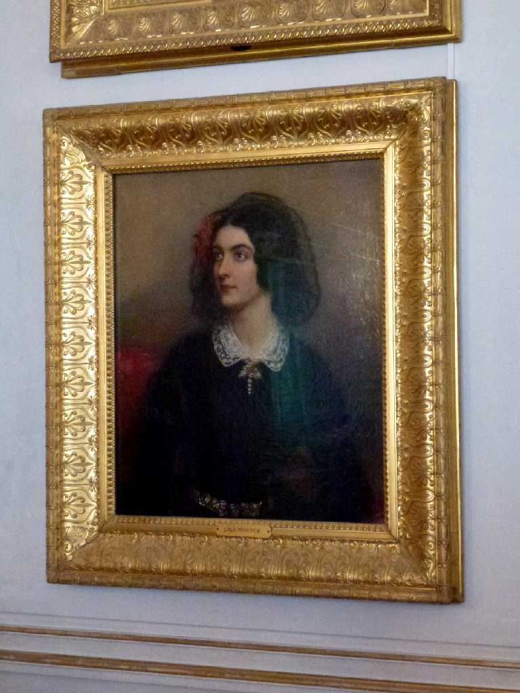
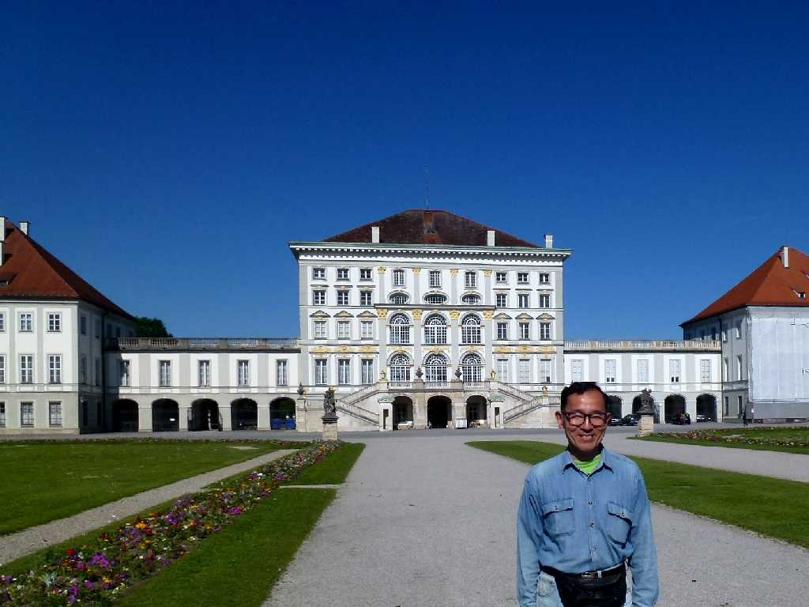

Schloss Nymphenburg München
妖精の森の城と云われるニンフェンブルク城

Steinernen Saals Schloss Nymphenburg
ギリシャの神々を描いた天井画が美しい石の間の祝祭会場
 
Schönheitengalerie Schloss Nymphenburg Lola Montez 1847
ルートヴィッヒⅠ世が描かせた愛人達３６枚の美人画が並ぶ美人画のギャラリー

July 6 2014 Schloss Nymphenburg